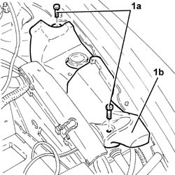
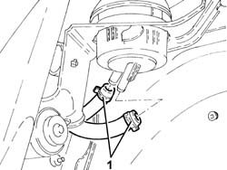
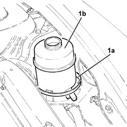
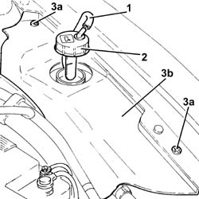
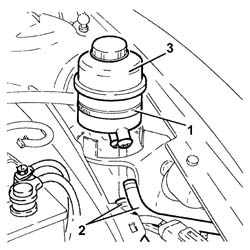

2127C12 hydraulic gear selection fluid reservoir - r r
- Path
- Procedures > 21 GEARBOX > 2127 ELECTRO-HYDRAULIC SELECTION. GEARBOX EXTERNAL. CONTROLS > 2127C hydraulic gear selection system > 2127C12 hydraulic gear selection fluid reservoir - r r
- Kind
- repair procedure (removal / refitting; the operation number is the code)
- Applies to
- engines: 2.0 TS, 3.2 V6; all production periods
- Interactive page
- https://sloeber94.github.io/elrnDB-a147/en/#/3025146
Applies to: engines: 2.0 TS; all production periods; only with equipment: Cambio robotizzato
 Removing
Removing
 Refitting
RefittingPosition the vehicle on the ramp.
Proceed with the removal 4450B10 Front WHEEL (one) - R.R. (Left side).
Proceed with the removal 7055B42 Additional FRONT WHEEL ARCH (one), left or right - R.R. (Left side).
Proceed with the removal 5530B10 battery - r+r .
Undo the electro-hydraulic selection gearbox hydraulic circuit fluid reservoir cap and drain the reservoir using a suitable syringe.
1. Undo bolts (1a) and remove protection (1b).

Applies to: engines: 2.0 TS; all production periods; only with equipment: Cambio robotizzato
1. Working via the wheel arch, disconnect the supply and return pipes from the electro-hydraulic selection gearbox hydraulic circuit fluid reservoir.

Applies to: engines: 2.0 TS; all production periods; only with equipment: Cambio robotizzato
1. Loosen the band (1a) and remove the electro-hydraulic selection gearbox hydraulic circuit fluid reservoir (1b).

Applies to: engines: 2.0 TS; all production periods; only with equipment: Cambio robotizzato
Refitting
RemovingPlace the electro-hydraulic selection gearbox hydraulic circuit fluid reservoir back in its housing and secure it using the band.
Working via the wheel arch, connect the supply and return pipes from the electro-hydraulic selection gearbox hydraulic circuit fluid reservoir.
Place the protection back in its housing and secure it using the bolt.
Check thelevel of the fluid in the electro-hydraulic selection gearbox hydraulic system and top it up, if necessary 2127C04 ELECTROHYDRAULIC selection gearbox hydraulic system FLUID - Check level and top up if necessary. .
Bleed the air from the electro-hydraulic selection gearbox hydraulic system 2127C06 Electro-hydraulic selection manual gearbox HYDRAULIC SYSTEM - Bleeding air .
Proceed with the refitting 5530B10 battery - r+r .
Proceed with the refitting 7055B42 Additional FRONT WHEEL ARCH (one), left or right - R.R. (Left side).
Proceed with the refitting 4450B10 Front WHEEL (one) - R.R. (Left side).
Remove the car from the ramp.
Applies to: engines: 3.2 V6; all production periods; only with equipment: Cambio robotizzato
Removing
Refitting1. Disconnect the breather pipe from the electro-hydraulic selection gearbox hydraulic circuit fluid reservoir cap.
2. Undo the electro-hydraulic selection gearbox hydraulic circuit fluid reservoir cap and remove it.
Drain the electro-hydraulic selection gearbox hydraulic circuit fluid reservoir using a suitable syringe.
3. Undo the bolts (3a) and remove the protection (3b).

Applies to: engines: 3.2 V6; all production periods; only with equipment: Cambio robotizzato
1. Loosen the band fixing the electro-hydraulic selection gearbox hydraulic circuit fluid reservoir.
2. Disconnect the supply and return pipes from the electro-hydraulic selection gearbox hydraulic circuit fluid reservoir.
3. Remove the electro-hydraulic selection gearbox hydraulic circuit fluid reservoir.

Applies to: engines: 3.2 V6; all production periods; only with equipment: Cambio robotizzato
Refitting
RemovingPlace the electro-hydraulic selection gearbox hydraulic circuit fluid reservoir back in its housing after having connected the supply and return pipes.
Fix the electro-hydraulic selection gearbox hydraulic circuit fluid reservoir to the mounting bracket using the band.
Place the protection back in its housing and secure it using the bolt.
Place the electro-hydraulic selection gearbox hydraulic circuit fluid reservoir cap back in its housing.
Connect the breather pipe to the electro-hydraulic selection gearbox hydraulic circuit fluid reservoir cap.
.Proceed with refitting 0010T47 hydraulic system fluid for gearbox with hydraulic selection check level and top up if necessary .
Topics linked from this page (6)
- 0010T47 hydraulic system fluid for gearbox with hydraulic selection check level and top up if necessary
- 2127C04 ELECTROHYDRAULIC selection gearbox hydraulic system FLUID - Check level and top up if necessary.
- 2127C06 Electro-hydraulic selection manual gearbox HYDRAULIC SYSTEM - Bleeding air
- 4450B10 Front WHEEL (one) - R.R.
- 5530B10 battery - r+r
- 7055B42 Additional FRONT WHEEL ARCH (one), left or right - R.R.